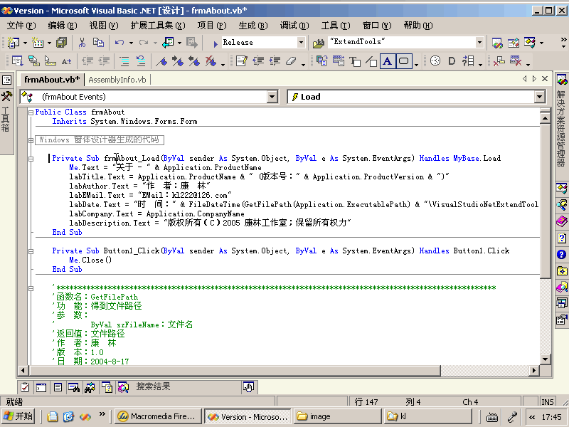
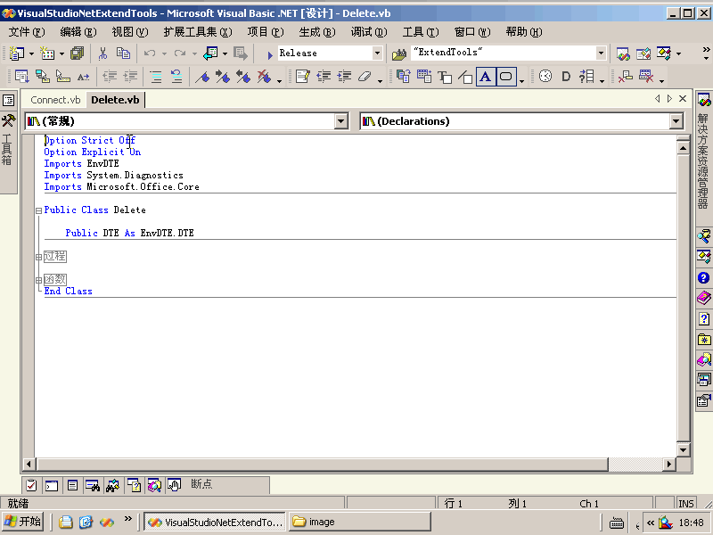
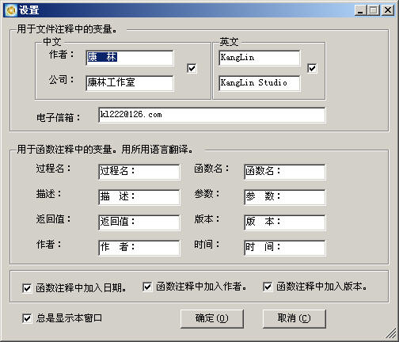

|
注释
完成《编程规范和范例》中的：
2-2：说明性文件（如头文件.h文件、.inc文件、.def文件、编译说明文件.cfg等）头部应进行注释，注释必须列出：版权说明、版本号、生成日期、作者、内容、功能、与其它文件的关系、修改日志等，头文件的注释中还应有函数功能简要说明。
2-3：源文件头部应进行注释，列出：版权说明、版本号、生成日期、作者、模块目的/功能、主要函数及其功能、修改日志等。
2-4：函数头部应进行注释，列出：函数的目的/功能、输入参数、输出参数、返回值、调用关系（函数、表）等。
?2-4：在程序块的结束行右方加注释标记，以表明某程序块的结束。
VisualStudioNetExtendTools.Connect.FunctionComment
功 能：给函数或文件自动加注释
用 法：先把光标放在函数定义行的头行上，然后再执行本过程即可自动给函数加注释。
在下面图中的窗口中可设置其效。如果用中文，在用于函数注释中的变量，用所用语言翻译组中，设置。如果用英文，把相应的地方用英文填写。还可设置是否加版本、作者、时间。把作者改为你的姓名。下面窗口设置的效果如下：
/*******************************************************************************************************
函数名：ShowLicense
描 述：
参 数：无
返回值：
版 本：1.0.0.1
作 者：康 林
时 间：2005-5-16 10:36:08
*******************************************************************************************************/
extern "C" BOOL WINAPI ShowLicense()
{
AFX_MANAGE_STATE(AfxGetStaticModuleState());
AfxEnableControlContainer();
CLicense licens;
if(IDOK == licens.DoModal())
{
if(licens.m_bShow)
return TRUE;
else
return FALSE;
}
return FALSE;
}
|
动画演试：

如果是在文件的第一行执行此命令，则增加文件的信息。
可以仅用中文（在下面图中的窗口中选择中文）或仅用英文（在下面图的中窗口中选英文）或两者都用（在下面图中的窗口中选中两者，下面例子是这种情况的效果）。下面图中效果如下：
'*******************************************************************************************************
'版权所有 (C) 2005 康林工作室；保留所有权利。
'文件名：Connect.vb
'描 述：
'版 本：2005.3.*
'作 者：康 林
'E_Mail：kl222@126.com
'日 期：2005-5-16
'时 间：2005-5-16 10:33:39
'编译器：Microsoft Development Environment 7.10 ―― Basic 7.10
'
'Copyright (C) 2005 KangLin Studio;All rights reserved.
'FileName ：Connect.vb
'Description：
'Version ：2005.3.*
'Author ：KangLin
'E_Mail ：kl222@126.com
'Date ：2005-5-16
'Time ：2005-5-16 10:33:39
'Compiler ：Microsoft Development Environment 7.10 ―― Basic 7.10
'*******************************************************************************************************
|
动画演试：

使用：
当本 AddIn 第一次启动时出现下面的窗口：

你可在此设置自动添加函数的格式、作者姓名、公司信息以及在函数注释中的变量。例如：想在函数注释中用英文注释，你可把函数注释中的变量用相应的英文填写。如：函数名：FunctionName：（注意冒号不能省）。
去掉“总是显示本窗口”的选项后，下次启动时不显示此窗口。如果要修改函数注释参数，则可在菜单“扩展工具集->设置->设置函数注释参数”打开。
下一步 |